Pixel Watch・Galaxy Watch｜全Android対応のリモートシャッターを使う方法
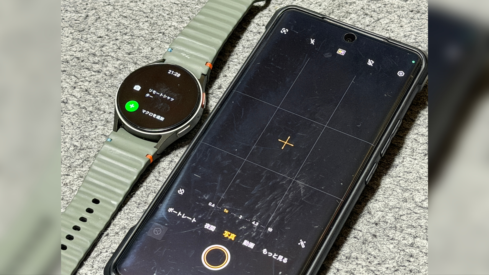
Pixel Watch・Galaxy Watch｜全Android対応のリモートシャッターを使う方法
Galaxy Watchに標準で搭載されているリモートシャッター、カメラコントロール機能は、Galaxyでしか利用できない。 Wear OS搭載のスマートウォッチにはGoogle カメラがインストールできるが、このアプリのリモートシャッター、カメラコントロール機能はPixel以外で使うことができない。 どの機種にも対応できるリモートシャッター、カメラコントロールアプリもあるが、独自のカメラアプリを操作するためのものであり、標準カメラアプリを利用できない。 そこで、MacroDroidを使ってWear OS搭載のスマートウォッチから接続したスマホのシャッターボタンを遠隔でクリックし、リモートシャッターを実現するという方法がある。 ここではGalaxy Watchを用いているが、Pixel Watchなどの他のWear OS搭載スマートウォッチでも画面のUIは異なるものの、基本的には同じ操作を行う。
目次
リモートシャッターを設定する
スマホとスマートウォッチにMacroDroidをインストールし、リモートシャッターを動作させられるようにする。
方法
1.AndroidスマホとWear OS搭載スマートウォッチにMacroDroidをインストールする
以下のリンクからMacroDroidのアプリをインストールする。 MacroDroidとはオートメーションを作成できるアプリであり、iOSでいうショートカットアプリと似たようなアプリである。 iOSのショートカットアプリのようにサードパーティアプリを操作したり細かなファイル操作をすることはできないが、iOSでは脱獄しないとできないような高度なシステム設定の変更などができ、WebhookやIFTTTと組み合わせると可能性が大幅に広がる。 ここではカメラアプリのシャッターボタンを遠隔で押すために用いる。
2.AndroidスマホでMacroDroidを開き、 "マクロ" タブで右下の "+" をタップする
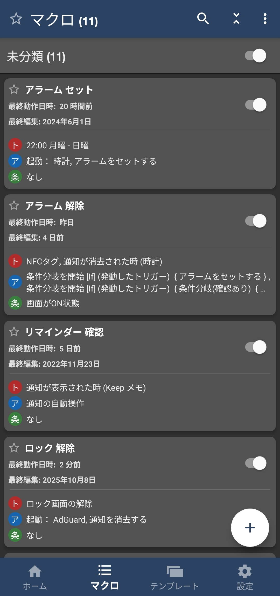
3. "トリガー" の右の "+" をタップする
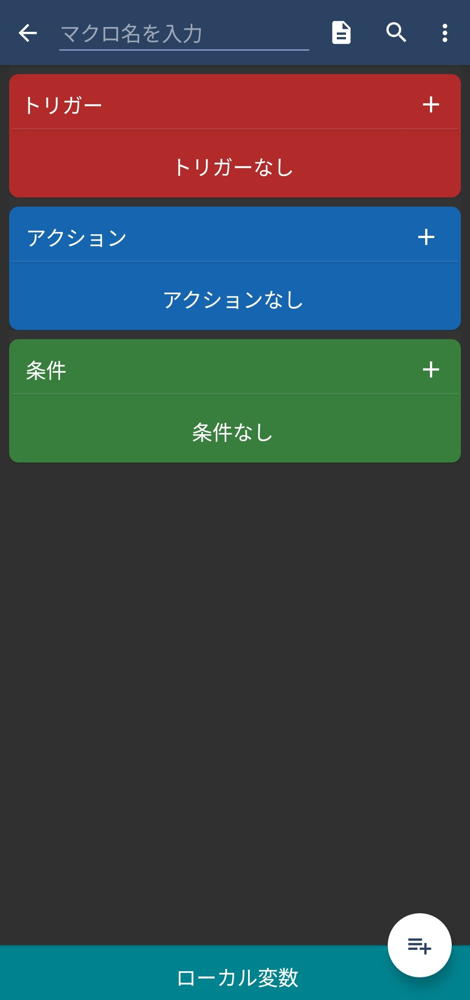
4. "接続" をタップする
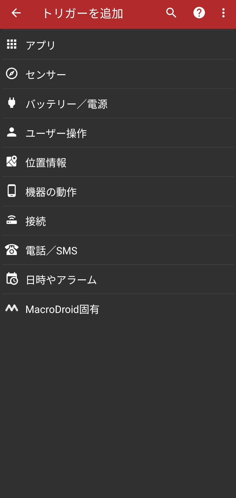
5. "Android Wear" をタップする
ちなみに、Android WearはWear OSの旧名である。
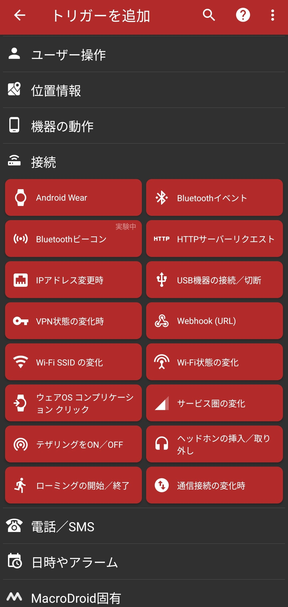
6. "Andorid Wearのアプリから" を選択して "OK" をタップする
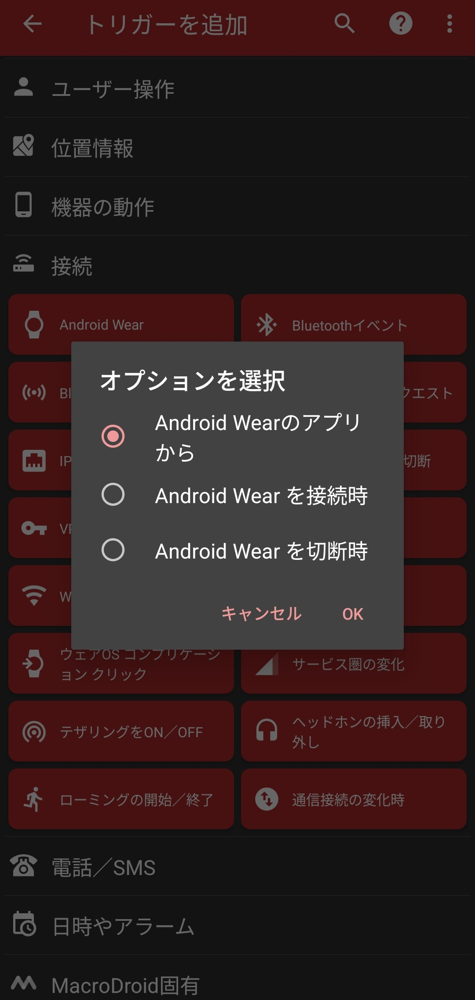
7.アイコンを選択する
ここで選択したアイコンはスマートウォッチ側のMacroDroidアプリで表示されるので、カメラアイコンなどにすると分かりやすい。
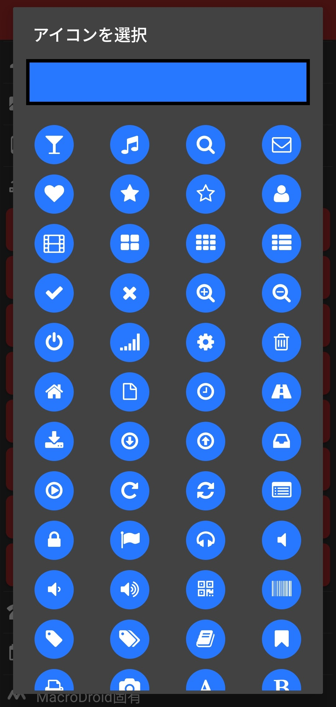
8. "アクション" の右の "+" をタップする
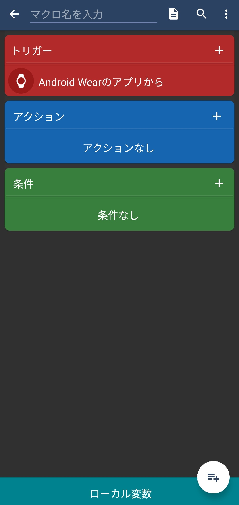
9. "機器の動作や操作" をタップする
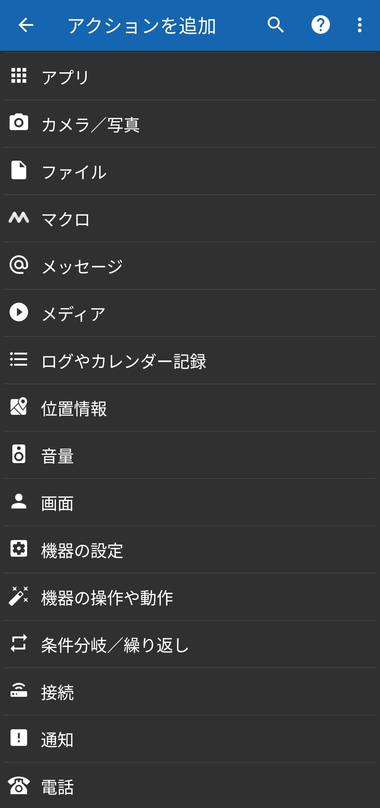
10. "UI画面操作" をタップする
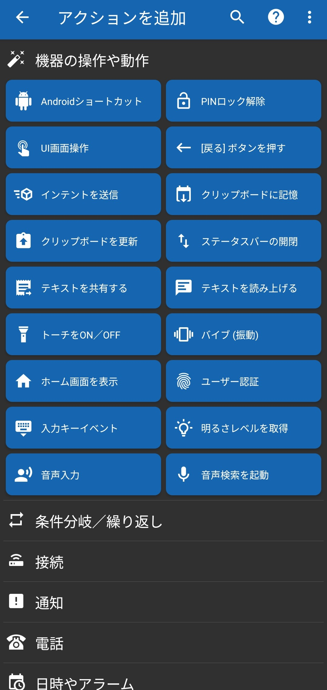
11. "クリック" を選択し、 "OK" をタップする
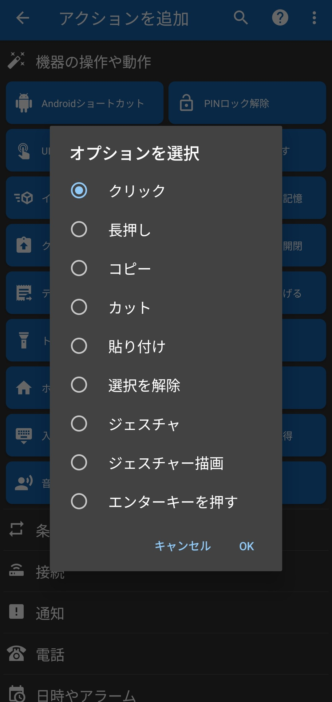
12. "アプリで自動判定" を選択し、 "OK" をタップする
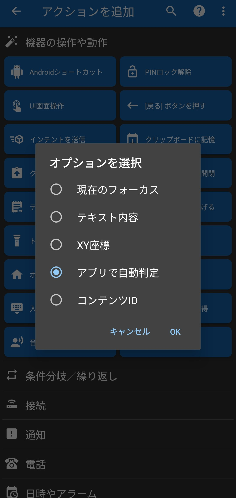
13.カメラアプリを開く
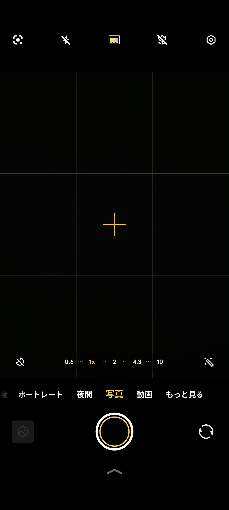
14.MacroDroidの "UI画面操作を識別" の通知をタップする
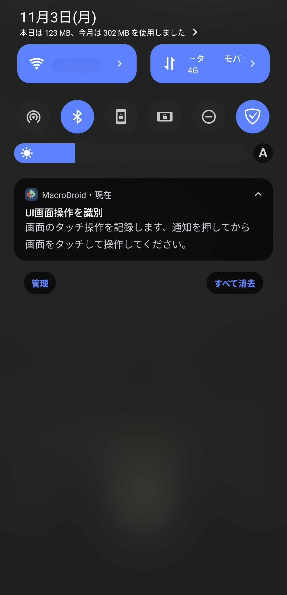
15.画面下に "UI画面タッチ操作をしてください" と表示されたらシャッターボタンをタップする
ここでの画面のタッチ操作をMacroDroidは記録する。 シャッターボタンを押すと、自動的にMacroDroidアプリに戻る。
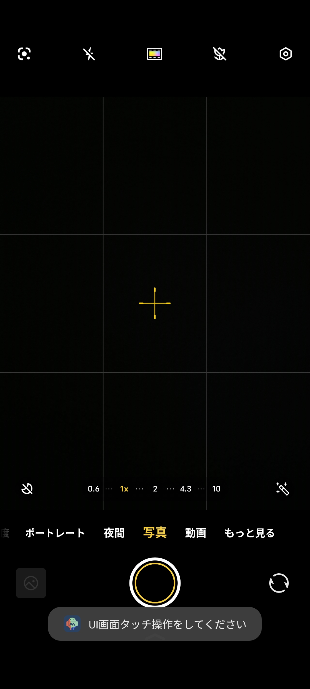
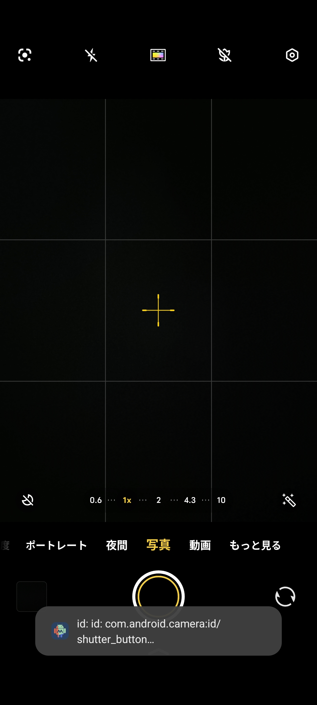
16.マクロ名を入力する
ここで入力したマクロ名はスマートウォッチ側のMacroDroidアプリで表示されるので、 "リモートシャッター" などにすると分かりやすい。
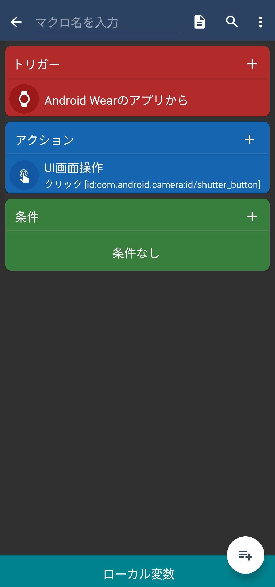
17.画面右下の "☰+" をタップする
これによりマクロが作成され、接続しているスマートウォッチ側のMacroDroidアプリにも表示されるようになる。
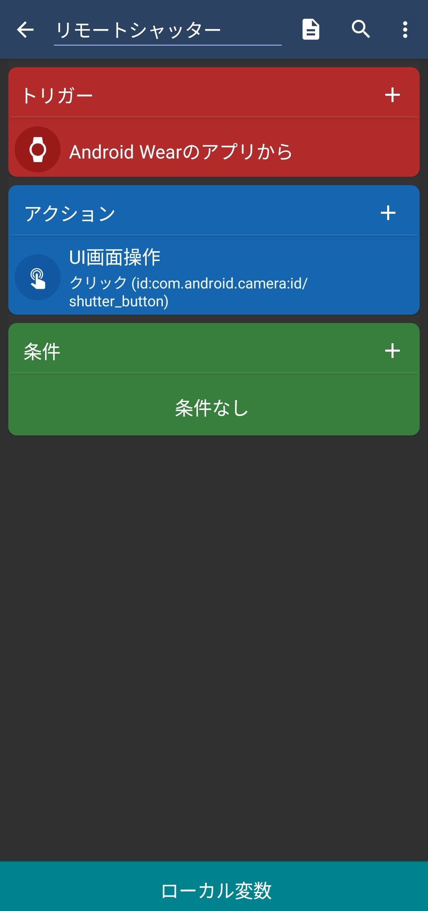
リモートシャッターの使い方
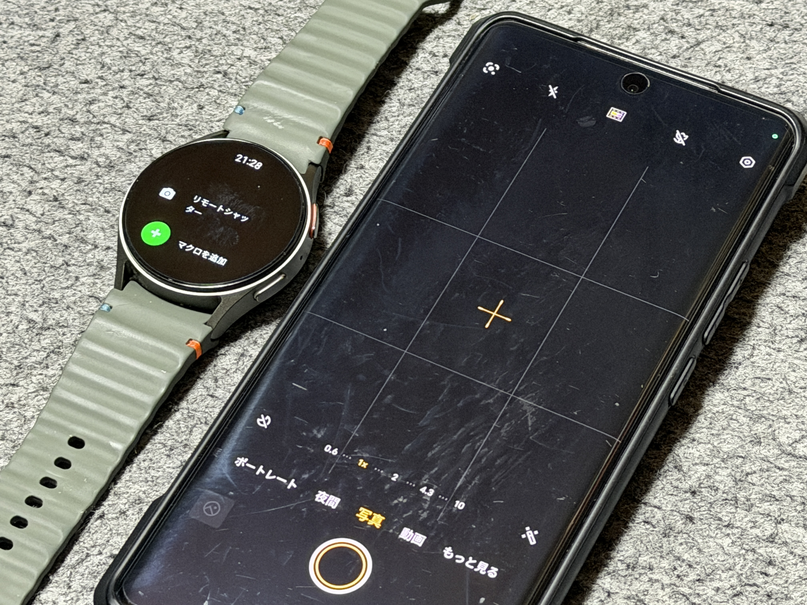
ここではMacroDroidを使ったリモートシャッターの動作を説明する。
方法
1.Androidスマホでカメラアプリを起動する
写真モード以外のポートレートモードや動画モードなどでも、シャッターボタンさえあれば動作する。 ロックが解除されていない状態でも動作するが、画面がオフになると動作しない。
2.Wear OS搭載スマートウォッチでMacroDroidアプリを開き、 "[設定したマクロ名]" をタップする。
スマホと接続されている状態であれば遠隔でシャッターボタンが押され、写真や動画が撮れる。
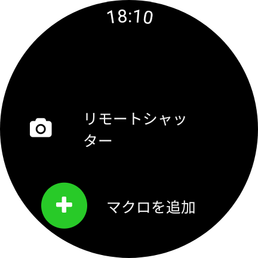
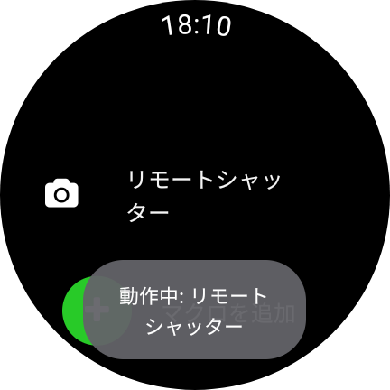
メリット
1.すべてのAndroidスマホとWear OS搭載スマートウォッチの組み合わせで使える
Galaxy WatchとGalaxy、Pixel WatchとPixelのように、同じメーカーのスマホとスマートウォッチという組み合わせに縛られることなく使える。
2.標準カメラアプリで撮影できる
ほとんどのWear OS向けのリモートシャッターアプリはAndroid側で独自のカメラアプリを操作するためのものであり、標準カメラアプリを利用することができない。 MacroDroidではシャッターボタンの操作に限られるものの、標準カメラアプリが使える。
デメリット
1.カメラアプリの遠隔起動やプレビュー、撮影設定の変更はできない
MacroDroidではロック状態でのカメラアプリ起動やカメラのプレビュー、撮影設定の変更はできない。 あらかじめカメラアプリを起動し、撮影モードやフォーカス、タイマー、画角等を調整する必要がある。
すべてのWear OSユーザーはリモートシャッターが使える
もちろんGalaxy WatchとGalaxyの組み合わせで使っている人、Pixelを使っている人はメーカー標準のリモートシャッター、カメラコントロール機能のほうが優秀なので、MacroDroidを使う必要はない。 しかし、これら以外のユーザーでもスマートウォッチがWear OS搭載であれば、前述のようにすべてのAndroidの機種で使えるリモートシャッターが実現できる。 集合写真を撮るとき、リモートシャッターはタイマー撮影よりも便利なので、ぜひ使ってみてほしい。
プロフィール

高度情報社会の最先端を駆け抜ける